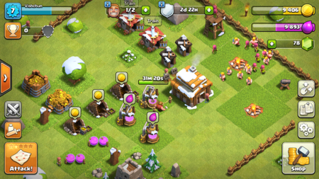

Clash of Clans (укр. Зіткнення кланів) — стратегічна багатокористувацька відеогра для мобільних пристроїв, розроблена фінською компанією Supercell для IOS та Android. Стала доступною в ITunes з версії 1.7, яка з'явилася 2 серпня 2012, а в Google Play — 7 жовтня 2013 року.

Селище і війська гравця
Clash of Clans поєднує риси жанрів RTS і Tower Defense. Гравець розбудовує селище, щоб наймати в ньому війська, вдосконалювати їх та боротися з іншими селищами, керованими штучним інтелектом або іншими гравцями. Селище складається з ратуші, військових споруд, оборонних споруд, ресурсних споруд і декорацій. Від рівня розвитку ратуші залежить які споруди і війська доступні гравцеві, скільки однотипних споруд він може мати. Військові споруди включають казарми, військові табори, фабрики заклять. У них тренуються війська і від них залежить розмір армії. Оборонні споруди автоматично атакують нападників або перешкоджають їхньому пересуванню. Ресурсні споруди дають ресурси відповідного різновиду й визначають їх кількість у запасі.
Декорації не мають практичної користі, лише прикрашаючи селище. Кількість будівельників визначає скільки одночасно будівництв або перебудов може відбуватися в селищі. Якщо в селищі є годинникова вежа, всі процеси в ньому пришвидшуються. Розбудові перешкоджають камені, колоди тощо, які можливо прибрати за певну плату. Розташування споруд можна безкоштовно змінити. Більшість дій вимагають ресурсів: золота, еліксиру, темного еліксиру і самоцвітів. Усі вони, крім самоцвітів, автоматично видобуваються в селищі. Золото переважно витрачається на будівництво і вдосконалення споруд. Еліксир і його різновид темний еліксир необхідні для найму та розвиток військ, вдосконалення деяких споруд. Самоцвіти слугують універсальною валютою, за яку можна миттєво завершити будь-який процес у селищі, або придбати інші ресурси. Отримуються як винагорода чи за реальні гроші. Максимальний запас ресурсів обмежений кількістю і рівнем розвитку їх сховищ. Зібравши армію, гравець відправляє її на штурм іншого селища. Війська рухаються і атакують автоматично, гравець лише контролює в якому місці і яку кількість висадити. Головна мета битви полягає у знищенні ратуші противника. Коли війська атакують сховища ресурсів, вони розграбовуються, одразу передаючи золото чи еліксир гравцеві. Всі бойові одиниці (юніти) поділяються на 3 ранги, згідно ціни та можливостей. Окремо виділяються вузькоспеціалізовані «темні» війська, що наймаються за темний еліксир. Найсильнішими в армії є герої — воїни, яких дозволяється мати лише одного. Герої на відміну від решти воїнів безсмертні, проте в разі поразки повинні певний час відновлювати сили. Підвищивши ратушу до 5-го рівня, гравець отримує доступ до заклять, які готуються на фабриці заклять і потім застосовуються на полі бою. За певну плату купується невразливість селища до нападів інших гравців. Відбудувавши клановий замок, гравець отримує змогу заснувати клан, що об'єднує не більше 50 гравців, або приєднатися до вже існуючого клану. Учасники клану кооперують свої дії, можуть спілкуватися в чаті, ділитися підкріпленням. Перемоги за битви з іншими людьми винагороджуються кубками. Здобувши визначену кількість кубків, гравець входить до відповідної ліги. Що вища ліга, то більша винагорода дається після кожної перемоги. У грі існує два поселення, подорож між якими стає можливою після відновлення корабля, що лежить біля першого селища.
Багато військ є у грі Clash of Clans. Військові сили поділяються на бійців (звичайні війська, «темні» війська і героїв) і закляття. Усі війська тренуються та покращуються за звичайний еліксир; "темні"та особливо сильні закляття вимагають темного еліксиру, що добувається окремо. Під час деяких свят стають доступними особливі сильні війська, такі як Гарбузовий варвар, Скелет велетня і Льодяний чаклун. Перший ранг. Війська першого рангу швидко створюються і коштують відносно дешево. Вони наділені невеликим запасом здоров'я і поокремо завдають невеликих ушкоджень. В основному вони використовуються групами і беруть фортеці радше числом, ніж силою, розпорошуючи увагу захисників. Такі оборонні споруди як вежа чаклуна і мортира, знищують групи бійців першого рангу, зводячи нанівець їхню чисельну перевагу. Війська: Варвар, Лучниця, Гоблін Другий ранг. Другий ранг військ потужніший за перший, містить спеціалізованих воїнів: стінобоїв, чаклунів, гігантів та повітряні кулі. Повітряні кулі також є першими літаючими військами, доступними в грі. Війська другого рангу складають кістяк будь-якої армії і здатні витримати багато ударів, перш ніж померти. Війська: Велетень, Стінобій, Повітряна Куля, Чаклун Третій ранг. Війська третього рангу — найсильніші юніти в грі, не рахуючи героїв. Група з декількох таких бійців здатна самотужки знищити селище противника. Однак, вони дорогі в наймі та вимагають на це багато часу. Війська третього рангу не так уразливі до атак мортир та чаклунських веж, як війська першого рангу. Цілителька, Дракон, Лицар П. Е.К. К.А., Дракончик, Шахтар, Електричний дракон «Темні» війська. На відміну від звичайних військ, «темні» війська тренуються з використанням темного еліксиру і тільки в спеціальних «темних» казармах. Війська: Міньйон, Вершник на Кабані, Валькірія, Голем (Големіт), Відьма (Скелет), Лавова гонча (Лавове щеня), Викидайло Герої. Герої є найпотужнішими військами. Вони безсмертні, тобто, гравець повинен купити їх лише один раз, після цього вони залишаються назавжди в його армії. Однак, якщо вони були переможені в бою, то їм буде потрібен час, щоб відновити сили. Війська: Король варварів, Королева лучниць, Великий сторож З 2017 року можливо звести селище будівельника, що складається з посилених споруд і воїнів. А саме: Лютий варвар, Підступна лучниця, Велетень-боксер, Радіоактивний міньйон, Скелет-бомбер, Дракончик, Гарматний віз, Нічна відьма (Кажан), Десантна повітряна куля, Супер П. Е. К. К. А. Крім того селище будівельника пропонує героя Бойову машину. Закляття. Закляття готуються на фабриці заклять. Покращуючи фабрику, можна розблокувати більше заклять і отримати можливість зберігати кілька одночасно. Також їх можна досліджувати в лабораторії, щоб зробити потужнішими.
У грі є можливість створення свого клану або приєднання до вже існуючого. Клани об'єднують гравців різних рівнів, які можуть змагатись між собою, а також брати участь у війні кланів. Участь у клані збільшує потужність війська. В будь-який момент гравець може попросити підкріплення військами чи ресурсами у своїх друзів. Якщо в клані є учасники вищого, ніж у гравця, рівня, вони можуть надіслати недоступних на його базі воїнів. Тих, у свою чергу, можна використовувати як для нападу на інші селища, так і для захисту своєї рідної бази.
Однокористувацька гра надає низку битв, де гравець в ролі глави селища бореться із гоблінами, завойовуючи і руйнуючи їхні фортеці. Кампанія починається з нападу гоблінських грабіжників, гравець вчиться оборонятися, керувати базою, після чого атакує позиції гоблінів, просуваючись до їхньої головної фортеці. Кожне вороже селище вирізняється своїм плануванням, що вимагає від гравця різних стратегій. Успіхи оцінюються в зірках (від 1 до 3), залежно від кількості зруйнованих споруд. Є змога переграти колишні битви задля кращого результату, але за них не отримується повторна винагорода в ресурсах.